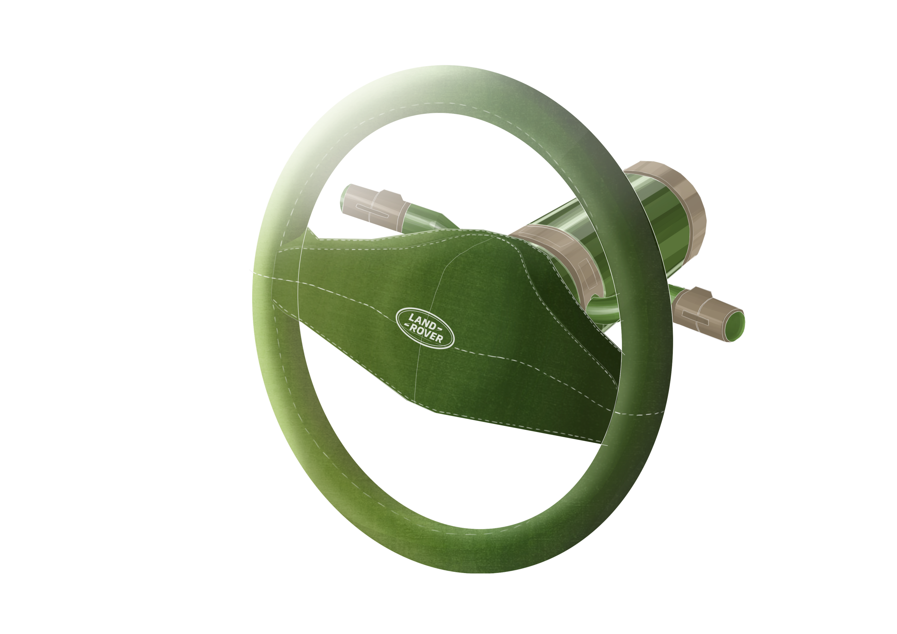

PALOMA HERNANDEZ
PORTFOLIO 2nd year
2026


Projet 01 · Concept Nautique & Routier
Chrysler
Conception conjointe d'un bateau et de sa remorque détachable, alliant élégance rétro-futuriste américaine et hydrodynamisme d'inspiration aquatique.


Projet 02 · Supercar & Puissance Viscérale
De Tomaso
Fusion percutante entre le design sculptural et sensuel italien et la puissance brute mécanique d'un moteur américain V8 Ford Pantera.


Projet 03 · Exploration & Nature
Land Rover
Création d'un véhicule d'exploration outdoor offrant une connexion organique et sensorielle avec la nature environnante.





Travaux Libres · Design Produit & Vision
Nothing & Concepts
Explorations formelles de technologies transparentes et d'interactions sensorielles dans l'espace domestique.